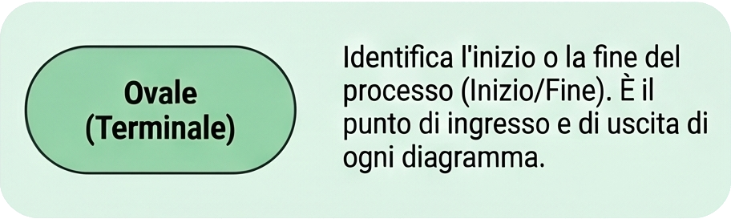
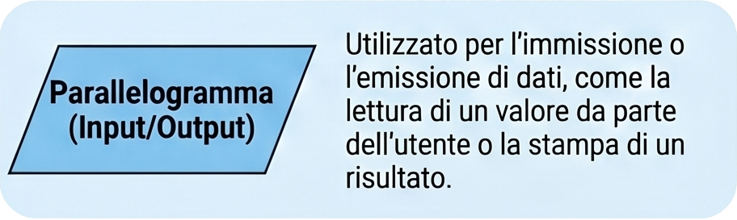
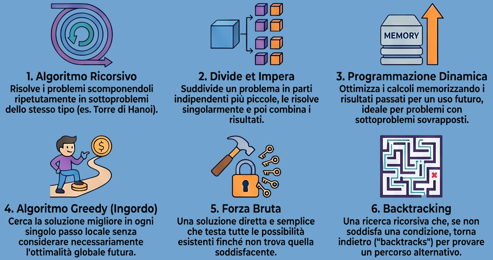

Algoritmi e diagrammi di flusso
33 ore - Analisi dei problemi e logica.
Programmazione imperativa
45 ore - Strutture di controllo e linguaggi.
Modularizzazione del software
30 ore - Funzioni e gestione scope.
Linguaggio HTML e CSS
57 ore - Sviluppo interfacce e design.
Fonte preview poi verra rielaborato.
Algoritmi e diagrammi di flusso
Analisi dei problemi e logica computazionale.
Nel contesto della programmazione informatica e della risoluzione dei problemi (problem solving), l'algoritmo e il diagramma di flusso (flowchart) costituiscono due strumenti complementari fondamentali. Essi permettono di formalizzare, analizzare e visualizzare la logica strutturale che risiede dietro lo sviluppo di un software o l'esecuzione di un processo complesso.
1. Definizione e Caratteristiche di un Algoritmo
Un algoritmo è definito come la sequenza logica, ordinata e passo-passo di istruzioni necessarie per risolvere un determinato problema o completare un'attività di calcolo ed elaborazione dati. Rappresenta la fase concettuale primaria nella progettazione informatica e può essere formulato mediante linguaggio naturale, pseudocodice o espressioni matematiche. Le sue proprietà essenziali includono la finitezza (deve terminare dopo un numero finito di passi) e l'univocità delle istruzioni.
2. Definizione e Simbologia del Diagramma di Flusso
Il diagramma di flusso è la rappresentazione grafica o pittorica di un algoritmo. Attraverso l'uso di forme geometriche standardizzate collegate da frecce direzionali, visualizza l'andamento del flusso esecutivo e le relazioni tra le diverse operazioni.
I principali simboli convenzionali utilizzati includono:
-

Scatola dei terminali (Ovale): Indica il punto di Inizio o di Fine del flusso all'interno del diagramma. -

Ingresso / Uscita (Parallelogramma): Rappresenta la lettura dei dati provenienti dall'esterno (Input) o la stampa/visualizzazione dei risultati (Output). -
Processo / Istruzione (Rettangolo): Identifica un'azione di calcolo, un'assegnazione di variabile o un'elaborazione interna dei dati.
-
Decisione (Rombo): Introduce una condizione logico-booleana (es. Vero/Falso, Sì/No) che devia il flusso su percorsi alternativi a seconda del risultato.
-
Linee di flusso (Frecce): Collegano visivamente i blocchi geometrici indicando l'ordine esatto e la direzione di esecuzione del processo.
3. Analisi Comparativa: Algoritmo vs Diagramma di Flusso
Sebbene descrivano il medesimo processo, i due strumenti divergono marcatamente sotto il profilo strutturale ed operativo:
| Caratteristica | Algoritmo | Diagramma di Flusso (Flowchart) |
|---|---|---|
| Formato | Procedura analitica testuale passo-passo. | Rappresentazione grafica e blocchi visivi. |
| Linguaggio | Espresso principalmente in linguaggio naturale o pseudocodice. | Espresso mediante simboli geometrici standardizzati. |
| Comprensione | Spesso complesso, astratto e più ostico da interpretare a colpo d'occhio. | Intuitivo, immediato e di facile comprensione visiva. |
| Fase di Debug | Agevola la fase di debug (rilevazione e correzione degli errori logici). | Risulta più difficile ed articolato effettuare il debug direttamente sulla grafica. |
| Gestione Complessità | Ottimizzato per la scomposizione e risoluzione di problemi complessi. | La gestione grafica di problemi eccessivamente complessi risulta laboriosa. |
| Tempo di Creazione | Richiede generalmente più tempo nella stesura testuale dei dettagli. | La sua costruzione (tramite software dedicati) è rapida e immediata. |
4. Classificazione dei Tipologie Fondamentali di Algoritmo
In ambito informatico si identificano svariate logiche di computazione. La letteratura di settore sintetizza la classificazione in sei macro-categorie funzionali:
- Algoritmo Ricorsivo: Risolve un problema complesso frammentandolo ripetutamente in sotto-problemi più piccoli della medesima natura, richiamando se stesso all'interno della propria definizione (es. il problema classico della Torre di Hanoi).
- Algoritmo Dividi e Conquista (Divide et Impera): Si articola in due fasi distinte: suddivide il problema in sottoproblemi indipendenti e di dimensioni inferiori, per poi risolverli singolarmente e ricombinarne i risultati nella soluzione finale. La sua efficienza dipende dalla semplicità dei sottoproblemi generati.
- Algoritmo di Programmazione Dinamica: Ideato da Richard Bellman negli anni '50, viene impiegato per problemi di ottimizzazione. Scompone il problema in sottoproblemi che, a differenza del modello divide et impera, presentano aree di sovrapposizione. Memorizza i risultati parziali passati per riutilizzarli ed evitare calcoli ridondanti.
- Algoritmo Greedy (Ingordo): Adottato per problemi di ottimizzazione, effettua a ogni singolo passo la scelta che risulta localmente ottimale al momento, senza valutare le implicazioni globali future. Non garantisce sempre l'ottimo assoluto, ma è computazionalmente rapido.
- Algoritmo di Forza Bruta (Brute Force): Costituisce l'approccio più lineare e diretto. Itera e valuta in modo esaustivo tutte le possibili soluzioni ammissibili descritte dal problema fino a individuare quella corretta. Strategia semplice ma costosa in termini di tempo e risorse per dataset estesi.
- Algoritmo di Backtracking: Basato su una ricerca ricorsiva in profondità (depth-first), esplora i percorsi di soluzione possibili. Se un percorso non soddisfa i vincoli richiesti, l'algoritmo torna sui propri passi ("backtrack") per tentare una diramazione alternativa (es. il rompicapo delle otto regine).

Programmazione imperativa
Strutture di controllo, paradigmi e linguaggi di alto livello in C.
Il paradigma di programmazione imperativa rappresenta uno dei modelli di computazione più storici e capillarmente diffusi nell'ambito dell'ingegneria del software[cite: 1, 4]. Esso si fonda sul concetto di stato del programma e su sequenze di istruzioni esplicite capaci di modificare tale stato nel tempo. Dal punto di vista teorico, il paradigma rispecchia in modo speculare l'architettura hardware di von Neumann, in cui la CPU preleva ed esegue istruzioni in sequenza, operando modifiche dirette sui registri e sulla memoria centrale.
1. Introduzione alla Programmazione Imperativa
In un linguaggio imperativo come il C, lo stato è memorizzato e strutturato mediante le variabili, mentre le transizioni di stato sono governate dalle espressioni e dalle assegnazioni[cite: 7]. Le caratteristiche essenziali del paradigma comprendono:
- Esecuzione sequenziale: Le istruzioni vengono elaborate riga dopo riga nell'ordine in cui compaiono, salvo esplicita deviazione del flusso di controllo.
- Assegnazione: L'operazione fondamentale che sovrascrive il valore contenuto in una locazione di memoria, alterando lo stato globale o locale del sistema.
- Effetti collaterali (Side Effects): La modifica dello stato interno dovuta alla valutazione di un'espressione o alla chiamata di una routine.
2. Classificazione dei Linguaggi e il Ruolo del C
I linguaggi di programmazione possono essere classificati in base al loro livello di astrazione rispetto all'hardware sottostante. Al livello più basso risiede il codice macchina, seguito dal linguaggio Assembly, strettamente dipendente dall'Instruction Set Architecture (ISA) dello specifico processore. I linguaggi di alto livello (come Java, Python, C++) introducono potenti astrazioni orientate alla logica del problema da risolvere, svincolando lo sviluppatore dalla gestione manuale delle risorse fisiche.
Il linguaggio C, ideato da Dennis Ritchie presso i Bell Labs nei primi anni '70, si posiziona in modo unico in questa gerarchia: pur possedendo tutte le strutture di controllo e di astrazione tipiche di un linguaggio di alto livello, conserva costrutti espressivi che permettono l'accesso diretto alla memoria (puntatori, bitwise operator), venendo spesso definito un linguaggio di medio livello o un "Assembly evoluto".
Nota Architetturale: Il C garantisce un'efficienza d'esecuzione prossima a quella del codice macchina nativo, rendendolo la scelta d'elezione per lo sviluppo di sistemi operativi, driver, firmware e sistemi embedded ad alte prestazioni.
3. Il Teorema di Jacopini-Böhm e la Programmazione Strutturata
Prima dell'avvento della programmazione strutturata, i flussi logici erano governati
da salti incondizionati (istruzioni goto), i quali portavano
alla creazione del cosiddetto spaghetti code, un codice intricato,
difficilmente leggibile e incline a bug subdoli.
Nel 1966, gli informatici italiani Corrado Böhm e Giuseppe Jacopini formularono
un teorema fondamentale che decretò il declino del goto.
Il Teorema di Jacopini-Böhm dimostra che qualunque algoritmo espresso tramite un diagramma di flusso può essere codificato utilizzando esclusivamente tre strutture di controllo fondamentali:
- Sequenza: Successione lineare di blocchi di istruzioni.
- Selezione (Alternativa): Scelta tra due percorsi logici in base al valore di verità di una condizione booleana.
- Iterazione (Ciclo): Ripetizione di un blocco finché una condizione rimane vera.
4. Le Strutture di Controllo Condizionali nel Linguaggio C
Il linguaggio C implementa la selezione attraverso due costrutti
principali: if-else e switch.
A. Il costrutto if / else
Consente l'esecuzuione di un blocco di codice condizionata dal valore di un'espressione.
In C, non esiste un tipo booleano nativo originario (introdotto solo in seguito come
_Bool in C99); pertanto, una condizione è considerata falsa se valutata
a zero (0), e vera per qualsiasi valore diverso da zero.
#include <stdio.h>
int main() {
int punteggio = 85;
if (punteggio >= 90) {
printf("Eccellente\n");
} else if (punteggio >= 60) {
printf("Superato\n");
} else {
printf("Non superato\n");
}
return 0;
}
B. Il costrutto switch-case
Utilizzato per selezioni multiple basate sul valore di un'espressione intera o di
tipo carattere[cite: 46]. È fondamentale inserire l'istruzione break
al termine di ciascun case per evitare il fenomeno del fall-through,
ovvero la propagazione dell'esecuzione nei case successivi.
switch (scelta) {
case 1:
printf("Opzione 1 selezionata\n");
break;
case 2:
printf("Opzione 2 selezionata\n");
break;
default:
printf("Opzione non valida\n");
}
5. Le Strutture di Controllo Iterative (I Cicli)
L'iterazione consente la ripetizione efficiente di porzioni di codice[cite: 61]. Il C offre tre diverse strutture, ciascuna ottimizzata per specifici scenari computazionali[cite: 61]:
| Struttura Ciclo | Tipo di Controllo | Esecuzioni Minime | Uso Ideale |
|---|---|---|---|
while |
Pre-condizionale (test in testa) | 0 | Quando il numero di iterazioni non è noto a priori]. |
do-while |
Post-condizionale (test in coda) | 1 ] | Validazione di input, cicli che devono eseguire almeno una volta. |
for |
Definito (contatore integrato) | 0 | Scansione di array, cicli con numero di iterazioni prefissato. |
A. Il Ciclo while e do-while
// Esempio while (controllo preventivo)
int i = 0;
while (i < 5) {
printf("%d", i);
i++;
}
// Esempio do-while (controllo successivo)
int input;
do {
printf("Inserisci un numero positivo: ");
scanf("%d", &input);
} while (input <= 0);
B. Il Ciclo for
Il ciclo for sintetizza in un'unica riga l'inizializzazione, la condizione di
permanenza e l'espressione di incremento/aggiornamento della variabile di controllo, riducendo
gli errori di programmazione legati alla dimenticanza dell'aggiornamento del contatore.
for (int j = 0; j < 10; j++) {
printf("Iterazione numero %d\n", j);
}
6. Operatori Logici, Relazionali e Precedenza delle Espressioni
La corretta valutazione delle condizioni all'interno delle strutture di controllo dipende dall'utilizzo rigoroso degli operatori relazionali e logici. Il C implementa i seguenti operatori fondamentali:
- Relazionali:
==(uguaglianza),!=(disuguaglianza),<,>,<=,>=. - Logici:
&&(AND logico),||(OR logico),!(NOT logico).
Un aspetto cardine del C è la valutazione a corto circuito: nell'espressione A && B, se A risulta falsa, B non viene minimamente valutata, poiché l'intera espressione non potrà mai essere vera[cite: 87]. Specularmente, per A || B, se A è vera, la valutazione di B viene omessa[cite: 88].
7. Best Practices e Prevenzione degli Errori Comuni
Nell'applicazione pratica delle strutture di controllo imperativo in C, si riscontrano frequentemente errori sistematici che possono compromettere la stabilità e la sicurezza dell'applicativo[cite: 90]. È doveroso prestare attenzione ai seguenti aspetti[cite: 91]:
| Errore Tipico | Meccanismo ed Effetto Low-Level | Implicazione Software |
|---|---|---|
| Assegnazione involontaria nell'if | Scrivere if (x = 5) anziché if (x == 5).
Il primo assegna 5 a x. |
Poiché 5 è diverso da 0, la condizione risulta sempre matematicamente vera. |
| Cicli infiniti | Omettere l'aggiornamento della variabile di ciclo o impostare una condizione logica impossibile da invalidare. | Il programma si blocca bloccando il thread esecutivo e saturando le risorse della CPU. |
| Omissione delle parentesi graffe | Se non si usano le graffe, solo la prima istruzione successiva fa parte dell'if o del ciclo. |
Può generare ambiguità logiche devastanti e falle di sicurezza (es. il celebre bug Apple goto fail). |
Modularizzazione del software
Funzioni, scope e gestione del codice e Gestione della Memoria in C.
La modularizzazione è una metodologia di progettazione software orientata alla scomposizione di un sistema complesso in sottosistemi autonomi, indipendenti e logicamente omogenei chiamati moduli. Questo paradigma risponde al principio cardine del Divide et Impera, consentendo di affrontare problemi di vasta scala riducendone la complessità cognitiva.
1. Il Concetto di Modularizzazione
I vantaggi ingegneristici derivanti da una corretta modularizzazione includono:
- Manutenibilità: Ciascun modulo isola una specifica funzionalità, rendendo la localizzazione e la risoluzione dei bug circoscritta.
- Riutilizzabilità del codice: Moduli ben definiti possono essere impiegati in progetti differenti senza alcuna modifica interna.
- Astrazione: Lo sviluppatore interagisce con il modulo esclusivamente tramite la sua interfaccia pubblica, ignorandone i dettagli implementativi (Information Hiding).
- Lavoro in Team: Sviluppatori diversi possono lavorare in parallelo su moduli distinti senza incorrere in conflitti sul codice sorgente.
2. Le Funzioni in C: Unità Modulari Fondamentali
Nel linguaggio C, l'unità base di modularizzazione è rappresentata dalla funzione. Una funzione è una porzione di codice isolata che esegue un compito specifico, riceve opzionalmente dei parametri in ingresso e restituisce un valore in uscita al chiamante.
2.1 Prototipo, Definizione e Chiamata
Il compilatore C richiede la conoscenza della firma di una funzione prima che questa venga invocata. Questo meccanismo impone la separazione tra la dichiarazione (prototipo) e l'implementazione effettiva.
#include <stdio.h>
// Prototipo della funzione (Dichiarazione)
int calcolaFattoriale(int n);
int main() {
int numero = 5;
int risultato = calcolaFattoriale(numero);
printf("Il fattoriale di %d e' %d\n", numero, risultato);
return 0;
}
// Definizione della funzione (Implementazione)
int calcolaFattoriale(int n) {
int fatt = 1;
for (int i = 1; i <= n; i++) {
fatt *= i;
}
return fatt;
}
3. Meccanismi di Passaggio dei Parametri
Il C supporta nativamente il passaggio dei parametri esclusivamente per valore (by value). La funzione riceve una copia locale del valore delle variabili; modifiche all'interno della funzione non alterano le variabili originali.
Per simulare il passaggio per riferimento (by reference), si utilizzano i puntatori per accedere direttamente all'indirizzo di memoria della variabile.
| Meccanismo | Cosa viene passato | Modifiche nel chiamante |
|---|---|---|
| Per Valore | Copia del valore | No, isolate nella funzione |
| Per Riferimento | Indirizzo di memoria | Sì, permanenti |
4. Regole di Scope e Classi di Memorizzazione
- Scope Locale (Block Scope): Variabili dichiarate all'interno di un blocco {}, allocate nello Stack. Deallocate automaticamente all'uscita dal blocco.
- Scope Globale (File Scope): Variabili dichiarate fuori da ogni funzione, risiedono nel segmento dati per tutta la durata dell'applicativo.
Regola d'oro: L'uso delle variabili globali deve essere ridotto al minimo per evitare accoppiamenti e side effect incontrollati.
4.1 Modificatori static e extern
- static: Mantiene il valore tra chiamate successive (variabile locale) o limita la visibilità al file corrente (variabile/funzione globale).
- extern: Dichiara una variabile/funzione definita in un altro modulo.
5. Strutturazione in Multi-File
La suddivisione rigorosa prevede:
- File Header (.h): Definizioni, macro e prototipi.
- File Sorgente (.c): Implementazione della logica e funzioni statiche private.
Si utilizzano le Inclusion Guards per prevenire doppie inclusioni:
#ifndef MODULO_H
#define MODULO_H
// Definizione di strutture e prototipi
void eseguiCompito(int dato);
#endif
6. Gestione della Memoria: Stack vs Heap
- Stack: Gestito dalla CPU (LIFO). Ospita record di attivazione e variabili locali. Veloce ma limitato.
- Heap: Allocazione dinamica (malloc/calloc). Richiede la deallocazione manuale (free) per evitare Memory Leak.
Linguaggio HTML e CSS
Sviluppo interfacce web e responsive design (HTML5, CSS3, Architetture di Layout).
1. Introduzione: Come Funziona il Web?
Il World Wide Web opera su un modello fondamentale noto come Client-Server (Cliente e Servitore), basato interamente sul concetto di interazione e scambio di informazioni.
- Il Client: È lo strumento utilizzato dall'utente finale, ovvero il browser installato su computer, tablet o smartphone.
- Il Server: È un computer remoto, costantemente acceso e connesso a Internet, posizionato in un data center. Il suo compito è custodire i file del sito web e "servirli" su richiesta.
Questo scambio avviene mediante una conversazione formale regolata dal
protocollo HTTP (HyperText Transfer Protocol).
Quando si clicca un link, il browser invia una Richiesta HTTP;
il server la analizza e restituisce una Risposta HTTP contrassegnata
da un codice di stato (come 200 OK in caso di successo,
o 404 Not Found se la risorsa non esiste).
I file inviati dal server sono testi che il browser interpreta e trasforma nell'interfaccia visiva grazie a tre linguaggi cardine:
- HTML: Definisce lo scheletro, la struttura e il contenuto grezzo della pagina.
- CSS: Gestisce l'estetica, i colori, i caratteri e la disposizione nello spazio.
- JavaScript: Rende la pagina dinamica e interattiva (animazioni, calcoli, aggiornamenti in tempo reale).
2. HTML: La Struttura di Base
L'HTML è un linguaggio di marcatura (non di programmazione). Il suo scopo è etichettare i testi attraverso dei marcatori detti tag per comunicare al browser la loro natura logica.
Un tag è racchiuso tra parentesi angolari. La maggior parte degli
elementi richiede un tag di apertura e uno di chiusura
(contraddistinto dalla barra diagonale /).
2.1 Anatomia di un Elemento HTML
I tag possono ospitare degli attributi all'interno del marcatore di apertura per fornire informazioni aggiuntive (sotto forma di coppie nome-valore):
<a href="https://www.esempio.com">Visita il sito</a>
In questo esempio, <a> è il tag di apertura per un collegamento
ipertestuale, href è l'attributo che indica la destinazione del link,
e </a> è il tag di chiusura.
3. La Struttura Globale di un Documento HTML5
Ogni pagina web segue uno schema strutturale rigido e standardizzato. Il codice non inizia mai direttamente con i contenuti visibili, ma con delle dichiarazioni fondamentali per il browser.
<!DOCTYPE html>
<html lang="it">
<head>
<meta charset="UTF-8">
<title>Titolo della Pagina</title>
</head>
<body>
<!-- Il contenuto visibile del sito va qui -->
</body>
</html>
3.1 Analisi dei Componenti Principali
<!DOCTYPE html>: Non è un tag HTML, ma una dichiarazione iniziale che comunica al browser di interpretare la pagina secondo gli standard moderni di HTML5.<html>: Il contenitore radice (root) dell'intero documento. L'attributolang="it"specifica la lingua per facilitare i motori di ricerca e le tecnologie assistive.<head>: La sezione "invisibile" che racchiude i metadati, le informazioni di configurazione, i collegamenti ai fogli di stile esterni e il titolo della scheda del browser.<meta charset="UTF-8">: Imposta la codifica dei caratteri universale, garantendo la corretta visualizzazione di accenti e simboli speciali.<body>: Il corpo del documento, contenente tutto ciò che viene effettivamente renderizzato a schermo (testi, immagini, video, tabelle).
4. L'Albero del DOM (Document Object Model)
Quando il browser carica un file HTML, esegue un processo di parsing e costruisce una struttura gerarchica ad albero chiamata DOM (Document Object Model). In questo modello, ogni tag si trasforma in un "nodo" dell'albero.
I nodi sviluppano relazioni di parentela analoghe a un albero genealogico:
- Parent (Genitore): Un elemento che racchiude direttamente altri tag (es.
<html>è il genitore di<head>e<body>). - Child (Figlio): Un elemento contenuto direttamente dentro un altro.
- Sibling (Fratello): Elementi che condividono lo stesso identico genitore (es.
<head>e<body>sono fratelli).
5. Marcatori di Testo e Formattazione
Per strutturare i testi in modo gerarchico e logico, l'HTML fornisce tag dedicati che evitano flussi continui e disordinati di parole:
- I Titoli (da
<h1>a<h6>): Definiscono la gerarchia dell'informazione.<h1>rappresenta il titolo principale del documento (consigliato uno solo per pagina per motivi SEO), mentre gli altri tag rappresentano sottotitoli a livelli crescenti di nidificazione. - I Paragrafi (
<p>): Utilizzati per blocchi di testo standard. Il browser inserisce automaticamente uno spazio verticale prima e dopo ogni paragrafo. - Enfasi e Rilevanza: Il tag
<strong>indica che il testo ha una forte importanza logica (visivamente reso in grassetto), mentre<em>attribuisce un'enfasi espressiva (visivamente reso in corsivo).
6. Collegamenti Ipertestuali e Navigazione
I collegamenti ipertestuali (link) costituiscono l'essenza stessa del World Wide Web,
consentendo di connettere tra loro pagine diverse dello stesso sito o risorse situate su server remoti.
Il marcatore deputato a questa funzione è il tag <a> (anchor),
il quale necessita tassativamente dell'attributo href per specificare la destinazione.
<!-- Collegamento esterno -->
<a href="https://www.google.com" target="_blank">Apri Google in una nuova scheda</a>
<!-- Collegamento interno (ancora) -->
<a href="#struttura">Torna al capitolo della struttura</a>
6.1 Percorsi Assoluti vs Percorsi Relativi
- Percorsi Assoluti: Includono l'URL completo, comprensivo di protocollo
(es.
https://). Si utilizzano esclusivamente per indirizzare l'utente verso siti web esterni. - Percorsi Relativi: Fanno riferimento alla posizione del file
rispetto alla cartella corrente del progetto (es.
contatti.htmlo../pagine/servizi.html). Si utilizzano per la navigazione interna al proprio sito, garantendo il funzionamento dei link anche in locale o se si cambia il nome del dominio.
L'attributo opzionale target="_blank" istruisce il browser ad
aprire il collegamento in una nuova scheda, preservando la sessione di navigazione
dell'utente sulla pagina di origine.
7. Inserimento di Contenuti Multimediali: Le Immagini
Le immagini vengono inserite mediante il tag <img>.
A differenza della maggior parte dei marcatori HTML, si tratta di un tag **vuoto**
(self-closing), ovvero non racchiude testo e non possiede un tag di chiusura separato.
Per funzionare correttamente e rispettare gli standard di accessibilità, richiede due attributi fondamentali:
src(source): Specifica il percorso relativo o assoluto del file d'immagine da caricare.alt(alternative text): Fornisce una descrizione testuale del contenuto visivo. È vitale per l'indicizzazione dei motori di ricerca e per gli screen reader utilizzati da utenti ipovedenti o non vedenti.
<img src="immagini/logo.png" alt="Logo ufficiale del Portfolio Professionale" width="300">
8. Strutture Elencative: Liste Ordinate, Liste Non Ordinate e Tabelle
L'organizzazione sistematica delle informazioni in elenchi o tabelle previene il disordine visivo e strutturale all'interno del codice.
8.1 Elenchi Non Ordinati (Puntati) ed Elenchi Ordinati (Numerati)
Gli elenchi non ordinati si aprono con il tag <ul> (Unordered List),
mentre quelli ordinati utilizzano il tag <ol> (Ordered List).
In entrambi i casi, ogni singolo elemento della lista deve essere tassativamente
racchiuso all'interno del tag <li> (List Item).
<ul>
<li>Primo elemento puntato</li>
<li>Secondo elemento puntato</li>
</ul>
8.2 Le Tabelle (Data Tables)
Le tabelle in HTML5 servono esclusivamente per organizzare dati strutturati in righe e colonne. La loro architettura prevede una suddivisione semantica rigida:
<table>: Il contenitore principale della struttura.<thead>: La sezione che racchiude la riga di intestazione.<tbody>: Il corpo della tabella contenente i dati effettivi.<tr>(Table Row): Definisce una riga della tabella.<th>(Table Header): Definisce una cella di intestazione (il testo appare in grassetto e centrato di default).<td>(Table Data): Definisce una comune cella di dati.
9. I Form di Input: Interazione con l'Utente
I moduli di input (Form) rappresentano lo strumento fondamentale con cui un sito web raccoglie
dati digitati dall'utente (creazione di account, barre di ricerca, inserimento di commenti).
Un'area di input si delimita tramite il tag <form>, all'interno
del quale si posizionano marcatori specifici:
<input>: Un tag vuoto (self-closing) la cui natura cambia radicalmente in base all'attributotype(es.type="text"per stringhe generiche,type="email"per indirizzi di posta,type="password"per nascondere i caratteri digitati).<label>: Definisce l'etichetta testuale associata a un input. L'uso dell'attributofor(collegato all'iddell'input) migliora drasticamente l'accessibilità e l'ergonomia.<textarea>: Consente l'inserimento di testi lunghi multi-riga.<button>: Elemento cliccabile che, se impostato contype="submit", inoltra i dati accumulati verso il server.
<form action="/salva-dati" method="POST">
<label for="utente">Nome Utente:</label>
<input type="text" id="utente" name="username" required>
<button type="submit">Invia Dati</button>
</form>
10. Introduzione a CSS3: Sintassi e Regole di base
Finito lo sviluppo strutturale con l'HTML, i fogli di stile **CSS3** intervengono per governare l'estetica, la formattazione visuale e la disposizione spaziale dei componenti. Il funzionamento del CSS si basa su un set di regole. Ciascuna regola è composta da un **selettore** e da un **blocco di dichiarazioni** racchiuso tra parentesi graffe.
10.1 Anatomia di una Regola CSS
Una dichiarazione è una combinazione accoppiata di una proprietà (cosa si vuole modificare) e di un valore (come lo si vuole modificare), separati dai due punti e terminati obbligatoriamente dal punto e virgola.
/* Sintassi: selettore { proprieta: valore; } */
p {
color: #333333;
font-size: 16px;
line-height: 1.5;
}
11. I Selettori Fondamentali
I selettori comunicano al browser quali nodi dell'albero del DOM devono essere intercettati per l'applicazione degli stili:
- Selettore di Tipo (o Tag): Punta a tutti gli elementi che corrispondono
a quel tag specifico (es.
h1intercetta tutti i titoli primari della pagina). - Selettore di Classe: Identificato da un punto (
.) seguito dal nome della classe. Intercetta tutti i tag che ospitano l'attributoclass="". È riutilizzabile su elementi diversi all'interno della stessa pagina. - Selettore di ID: Identificato da un cancelletto (
#) seguito dal nome dell'ID. Punta a un elemento univoco provvisto dell'attributoid="". Non può mai essere duplicato all'interno dello stesso file HTML.
/* Selettore di tipo */
span { color: blue; }
/* Selettore di classe */
.testo-evidenziato { background-color: yellow; }
/* Selettore di ID */
#bottone-principale { border-radius: 5px; }
12. Selettori di Parentela e Combinatori
I combinatori permettono di affinare la mira dei selettori CSS combinando più tag in base alla loro posizione gerarchica all'interno dell'albero del DOM:
- Selettore Discendente (Spazio vuoto): Punta a tutti gli elementi che si trovano ovunque
all'interno del tag genitore, anche se molto nidificati (es.
div pseleziona tutti i paragrafi che stanno dentro a un div). - Selettore Figlio Diretto (
>): Intercetta esclusivamente gli elementi che sono figli di primo livello del genitore (es.ul > liintercetta solo i list item immediati, ignorando eventuali sottoliste nidificate). - Selettore Fratello Adiacente (
+): Seleziona l'elemento immediatamente successivo che si trova sullo stesso livello di parentela (es.h1 + papplica lo stile solo al primo paragrafo che segue subito un titolo).
/* Solo i paragrafi figli diretti del div */
div > p { margin-bottom: 20px; }
/* Il paragrafo subito dopo un h2 */
h2 + p { font-weight: bold; }
13. Pseudo-classi e Pseudo-elementi
Le pseudo-classi e gli pseudo-elementi introducono astrazioni per intercettare stati dinamici dell'interfaccia o porzioni specifiche di testo senza aggiungere classi artificiali nell'HTML.
13.1 Le Pseudo-classi (Stati dinamici)
Si identificano con un singolo due punti (:) e modificano lo stile di un
elemento quando si trova in una determinata condizione:
:hover: Si attiva quando l'utente passa il cursore del mouse sopra l'elemento (fondamentale per bottoni e link).:focus: Si attiva quando un elemento riceve l'attenzione del sistema, ad esempio quando si clicca dentro un campo di input per digitare.:nth-child(n): Permette di selezionare un figlio specifico in base alla sua posizione numerica (es. per colorare le righe alterne di una tabella).
13.2 Gli Pseudo-elementi (Porzioni strutturali)
Si identificano convenzionalmente con il doppio due punti (::)
e creano elementi virtuali o isolano parti specifiche:
::beforee::after: Consentono di iniettare contenuti decorativi grafici subito prima o subito dopo il contenuto reale di un tag, agendo via CSS.::first-letter: Isola la prima lettera di un blocco di testo per creare un effetto capolettera tipografico.
/* Effetto hover sul bottone */
.btn:hover { background-color: #0056b3; }
/* Input evidenziato durante la digitazione */
input:focus { border: 2px solid #007bff; }
14. Il Meccanismo della Cascata e l'Ereditarietà
Il nome Cascading Style Sheets deriva dal fatto che le regole stilistiche fluiscono dall'alto verso il basso della gerarchia. Molte proprietà (come i font e i colori del testo) vengono trasmesse per ereditarietà dai nodi genitori ai figli, a meno che non intervenga una regola più specifica a sovrascriverle.
Quando più selettori si contendono lo stile dello stesso identico tag, il browser risolve il conflitto applicando la regola con il valore di specificità più alto, calcolato secondo un punteggio geometrico standardizzato (Tag = 1 punto, Classe = 10 punti, ID = 100 punti, Stile in linea = 1000 punti).
15. Gestione del Colore nel CSS3
Il CSS3 offre diverse metodologie per definire i colori degli elementi (testo, sfondi, bordi), permettendo di passare da dichiarazioni semplici a configurazioni avanzate con trasparenze:
- Sintassi Esadecimale (HEX): Rappresentata da un cancelletto (
#) seguito da sei caratteri alfanumerici (0-9, A-F) divisi in tre coppie, che indicano rispettivamente l'intensità di Rosso, Verde e Blu (es.#FF0000è rosso puro). - Sintassi RGB / RGBA: Modello additivo basato sui tre colori primari espressi con valori da 0 a 255. La variante RGBA introduce un quarto parametro, il canale Alpha (da 0.0 a 1.0), che governa il livello di opacità e trasparenza.
- Sintassi HSL / HSLA: Modello intuitivo basato su tre parametri: Hue (Tonalità espressa in gradi da 0 a 360 sulla ruota dei colori), Saturation (Saturazione in percentuale) e Lightness (Luminosità in percentuale). Anche qui la variante HSLA supporta il canale Alpha.
/* Esempi di colore di sfondo equivalenti */
.box-colore {
background-color: #3498db; /* Esadecimale */
background-color: rgb(52, 152, 219); /* RGB */
background-color: rgba(52, 152, 219, 0.8); /* RGBA con trasparenza al 80% */
background-color: hsl(204, 70%, 53%); /* HSL */
}
16. Tipografia e Font Web
La gestione dei testi si affida a proprietà specifiche che controllano lo stile, la dimensione e la famiglia tipografica. Nella definizione dei font è essenziale indicare sempre una font family di fallback (di riserva), in modo che il browser sappia cosa mostrare qualora il font principale non fosse installato sul computer dell'utente.
16.1 Famiglie di Caratteri Generiche
- Serif: Caratteri provvisti di "grazie" o allungamenti alle estremità (es. Times New Roman), adatti alla stampa cartacea.
- Sans-Serif: Caratteri lineari, puliti e privi di grazie (es. Arial, Helvetica), ideali per la lettura su schermi digitali.
- Monospace: Caratteri in cui ogni singola lettera occupa esattamente lo stesso spazio orizzontale (es. Courier, Consolas), utilizzati universalmente nei blocchi di codice.
16.2 Proprietà Tipografiche Fondamentali
Le regole di formattazione del testo includono controlli geometrici precisi per migliorare la leggibilità dell'interfaccia:
font-size: Determina la dimensione del carattere.font-weight: Regola lo spessore della linea (es.boldper il grassetto o valori numerici come400per il regular e700per il bold).line-height: Imposta l'interlinea, ovvero lo spazio verticale tra le righe di uno stesso paragrafo.text-align: Allinea il testo a sinistra, a destra, al centro o giustificato.
.articolo-testo {
font-family: 'Roboto', Helvetica, Arial, sans-serif;
font-size: 1.1rem;
font-weight: 400;
line-height: 1.6;
text-align: justify;
}
17. Il CSS Box Model: La Struttura Visiva degli Elementi
Per disporre correttamente i componenti nello spazio e creare interfacce strutturate, è indispensabile comprendere la regola d'oro del rendering web: ogni singolo elemento presente nella pagina è considerato dal browser come una scatola rettangolare invisibile.
Questa scatola (Box) è composta da quattro strati concentrici che si influenzano geometricamente a vicenda:
- Content Area: L'area centrale più interna che ospita il contenuto effettivo del
tag (testo, immagini o altri tag figli). Le sue dimensioni possono essere forzate tramite le
proprietà
width(larghezza) eheight(altezza). - Padding (Spaziatura interna): Cuscinetto di spazio vuoto e trasparente situato tra il contenuto e il bordo dell'elemento. Serve a far "respirare" i testi evitando che collidano con i margini della scatola. Prende il colore di sfondo dell'elemento stesso.
- Border (Bordo): La linea perimetrale che racchiude il contenuto e il padding.
Può essere personalizzata in spessore, stile e colore (es.
border: 2px solid #333;). - Margin (Margine esterno): Spazio vuoto posizionato al di fuori del bordo. Viene utilizzato per distanziare l'elemento corrente dalle altre scatole adiacenti presenti nella pagina. È sempre completamente trasparente.
18. Controllo Avanzato delle Dimensioni: Box-Sizing
Di default, il browser calcola lo spazio totale occupato da un elemento sommando: Larghezza del
contenuto + Padding + Bordo. Questo significa che se impostiamo un blocco a width: 300px;
e successivamente aggiungiamo 20px di padding, la larghezza reale diventerà di 340px, scombinando i calcoli del layout.
Per azzerare questo comportamento e rendere i calcoli intuitivi, i professionisti applicano un reset
globale tramite il selettore universale (*), forzando la proprietà box-sizing: border-box;.
In questo modo, padding e bordi vengono assorbiti all'interno della larghezza impostata.
/* Reset Globale Professionale del Box Model */
* {
box-sizing: border-box;
margin: 0;
padding: 0;
}
19. I Meccanismi di Posizionamento (Position)
La proprietà position permette di deviare un elemento dal normale flusso lineare della
pagina per collocarlo in punti specifici dello schermo dello smartphone o del computer:
- Static (Predefinito): L'elemento segue il normale flusso documentale della pagina, posizionandosi uno dopo l'altro dall'alto verso il basso.
- Relative: L'elemento viene spostato rispetto alla sua posizione originaria nel
flusso tramite le coordinate
top,bottom,lefteright, lasciando però intatto lo spazio vuoto dove si trovava prima. - Absolute: L'elemento si sgancia totalmente dal flusso della pagina (gli altri elementi si comportano come se non esistesse) e si ancora rispetto al primo elemento genitore che possiede a sua volta un posizionamento diverso da static.
- Fixed: Il blocco si ancora rigidamente alle coordinate della finestra del browser e rimane bloccato nello stesso punto dello schermo anche quando l'utente scorre la pagina (es. i menu di navigazione sempre visibili in alto).
20. Disposizione Monodimensionale: Il Motore Flexbox
Nelle prime fasi storiche dello sviluppo web, allineare due elementi l'uno di fianco all'altro richiedeva l'uso di stratagemmi complessi e fragili (come i vecchi float). Oggi, per gestire la disposizione degli elementi lungo un unico asse (una riga orizzontale o una colonna verticale), si utilizza lo standard potente denominato Flexbox (Flexible Box Layout).
Il sistema si attiva applicando la proprietà display: flex; su un elemento contenitore padre
(chiamato Flex Container). Da quel momento, tutti gli elementi situati direttamente al suo interno
(Flex Items) diventano flessibili, si dispongono automaticamente in linea ed evitano collisioni.
20.1 Proprietà del Contenitore Flex
flex-direction: Definisce l'orientamento dell'asse principale (rowper disporre i figli in orizzontale,columnper disporre i figli in verticale).justify-content: Distribuisce lo spazio vuoto lungo l'asse orizzontale (es.space-betweenspinge il primo elemento a sinistra e l'ultimo a destra;centerraggruppa tutto al mezzo).align-items: Governa l'allineamento verticale dei componenti (es.centerper centrarli perfettamente in altezza).gap: Definisce uno spazio nativo di separazione fisso tra un elemento e l'altro, senza dover ricorrere ai margini esterni sui figli.
/* Esempio di una barra di navigazione flessibile */
.barra-navigazione {
display: flex;
flex-direction: row;
justify-content: space-between;
align-items: center;
gap: 20px;
background-color: #1a2e40;
padding: 10px 20px;
}
20.2 Flessibilità dei Singoli Componenti
Oltre a controllare il contenitore, è possibile assegnare proprietà specifiche ai singoli elementi figli.
La proprietà flex: 1; comunicata a un blocco indica al browser di consentire a quel
determinato componente di espandersi fino a occupare tutto lo spazio vuoto residuo all'interno
della riga, comprimendo gli altri elementi al loro ingombro minimo iniziale.
21. Disposizione Bidimensionale: Il CSS Grid Layout
Se Flexbox è lo strumento ideale per gestire elementi disposti lungo un unico asse, lo sviluppo di interfacce complesse richiede un controllo totale su due dimensioni contemporaneamente: le righe e le colonne. A questo scopo risponde lo standard CSS Grid Layout, un motore di rendering che permette di tracciare una vera e propria griglia geometrica sopra la pagina.
Si attiva impostando display: grid; sul contenitore e definendo la struttura dei
binari geometrici tramite le proprietà grid-template-columns e grid-template-rows.
/* Creazione di una griglia a 3 colonne simmetriche */
.catalogo-grid {
display: grid;
grid-template-columns: 1fr 1fr 1fr;
gap: 15px;
}
21.1 L'Unità di Misura Fractional (fr)
L'unità di misura fr (fractional unit) rappresenta una delle innovazioni più significative
del CSS moderno. Invece di vincolare le colonne a misure fisse in pixel, l'unità 1fr indica
al browser di dividere lo spazio totale disponibile in parti uguali. Se lo schermo dell'utente si allarga o si stringe,
le colonne si espanderanno o comprimeranno in modo perfettamente proporzionale, preservando intatta la simmetria geometrica impostata.
22. Responsive Web Design e l'Approccio Mobile-First
Il Responsive Web Design (RWD) è la metodologia progettuale che permette alle interfacce di adattarsi in modo fluido e automatico a qualsiasi risoluzione dello schermo (smartphone, tablet, laptop o desktop). Il pilastro fondamentale di questa tecnica è la filosofia del Mobile-First: si sviluppa inizialmente lo stile lineare dedicato agli schermi più piccoli, per poi aggiungere progressivamente elementi di complessità visiva man mano che lo spazio a disposizione aumenta.
Questo controllo condizionale viene gestito nel foglio di stile attraverso le Media Queries, le quali intercettano la larghezza del viewport del dispositivo ed applicano regole dedicate oltre una certa soglia geometrica (detta Breakpoint).
/* Stili base per Mobile (schermi piccoli) */
.colonna {
width: 100%;
}
/* Breakpoint per Tablet (schermi da 768px in su) */
@media screen and (min-width: 768px) {
.colonna {
width: 50%;
}
}
/* Breakpoint per Desktop (schermi da 1024px in su) */
@media screen and (min-width: 1024px) {
.colonna {
width: 33.33%;
}
}
23. Unità di Misura Relative e Scalabilità
Per realizzare un'interfaccia flessibile e accessibile, i fogli di stile professionali evitano l'uso di unità di misura fisse e assolute (come i pixel per le dimensioni dei testi), preferendo le unità di misura relative:
- em: Relativo alla dimensione del carattere dell'elemento genitore diretto.
- rem (root em): Relativo alla dimensione del font impostata sull'elemento radice
<html>(di default pari a 16px). Garantisce che l'intero layout si ridimensioni proporzionalmente se l'utente modifica le impostazioni di accessibilità del proprio browser. - vw / vh (Viewport Width / Height): Unità basate sulla percentuale della finestra
visibile del browser (es.
100vhoccupa esattamente il 100% dell'altezza dello schermo).
24. Linee Guida e Buone Pratiche Professionali
Per assicurare la massima qualità nello sviluppo di interfacce web, è fondamentale seguire tre regole metodologiche raccomandate dagli standard internazionali:
- Validità e Pulizia della Struttura: Ogni tag aperto deve essere chiuso correttamente nel giusto ordine di nidificazione. Il codice deve essere formattato in modo ordinato applicando un'indentazione coerente, riducendo drasticamente la presenza di bug sintattici.
- Separazione Rigida delle Competenze: L'HTML deve descrivere unicamente il significato logico e la natura dei contenuti. L'aspetto estetico, le dimensioni e le proprietà cromatiche devono essere governate esclusivamente all'interno del file CSS, evitando l'uso di attributi di stile in linea.
- Inclusione e Accessibilità Universale: Fornire sempre l'attributo
altdescrittivo su tutte le immagini per consentire la navigazione tramite screen reader agli utenti ipovedenti, e garantire un contrasto cromatico sufficientemente elevato tra il testo e lo sfondo per facilitare la lettura in qualsiasi condizione di luce ambientale.